Systems Thinking with Obeya
Resources for the book, chapter by chapter.
Welcome to the resource pages for the book. Here you will find links, videos, tools and templates that will speed up your learning. The pages are continually improved with new resources, and an e-course with a 9-step guide to developing Obeya in your organization is in the works. Questions, ideas or resources to share: post@learnorg.global.
Part I Just Learning Organizations will survive
Introduction: Why Obeya, why now? 1. What is learning organizations?
2. Obeya: See together, think together, try together
3. What can we learn from Toyota?
4. See together – the art to do things visible for everyone
5. Think together – systems thinker do it easier
6. Withouth practice -no knowledge
7. Strategic Obeya and Hoshin Kanri
8. Digital Obeya
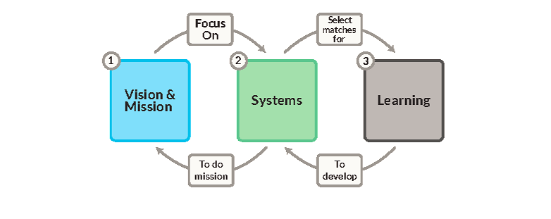
Introduction: Why Obeya and why now?
The Purporse with this book is to all types of leaders, managers, trade union representatives and operators, to be able to strengthen the ability to adapt to challenges through to a better learning together. Frederick Laloux writes in his epoch-making re-invention organizations.
There have been many organizational paradigms (ways of thinking) before, and there will be new in the future organizations". Organizations will change because they have to, such as Charles Darwin in his time formulated in relation to species. System thinkers with Obeya will help with the transition from traditional
management to the a dynamic development and learning systems. There are several important sources you can look up here. But I recommend you to start by reading Dr. Deming´s New Economics. If you haven't read it by now, order it!.
Central to Deming´s theori is that most of the results we don't want are "built into" the systems. By understanding the systems better, we will be able to improve them. People are more than good enough, but they have to change the way they lead. Then we must have knowledge. This is the central point. We have to stop "believing" and get our bearings by observing and thinking better. Part 1 in the book The book deals with the theoretical basis for this shift.
Good videos of Systems Thinking
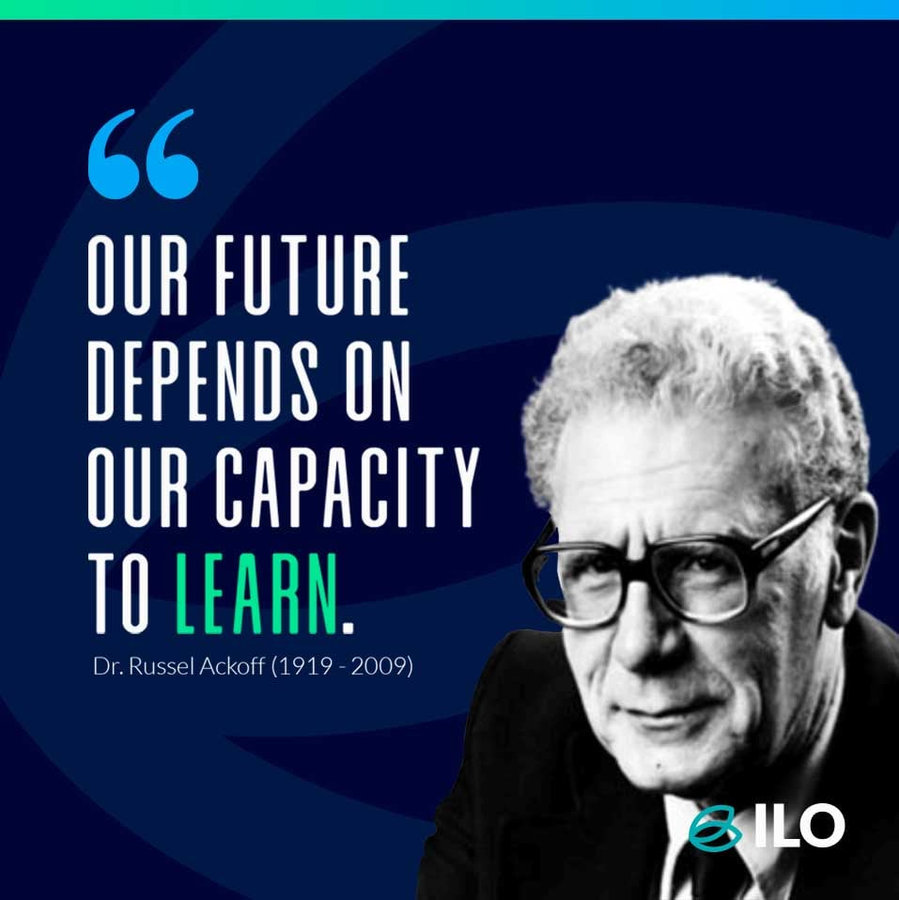
See the lecture from Dr. Russel Ackoff (1919 -2009)
See video about basic elements in system thinking DSRP.
Nøkkelresurser
Les sammendrag av Laloux tekst (PDF)

Kelly allan foredrag om Deming basics (foredrag på Deming konferanse i 2014.
Am C. Edmonson from Harvard Business School lecture
Chapter 1 What is a learning organization?
A learning organization is a complex system that is able to adapt through joint learning.
Here we use a framework called VCML. This is essentially the framework for ALL organizations. But by being aware of this, we put the organization in a very position to learn.
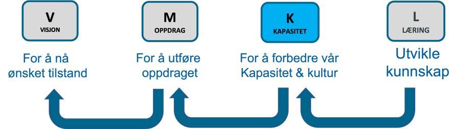
The framework for every organization is VMCL or fission mission - Capability Systems and Learning. Capacity and culture are our organization with people, equipment, procedures, materials, knowledge, etc. It is what we are. Learning is to optimize and improve our capacity to carry out our mission to achieve the mission. Here is an overview of the VCML (pdf).å visjonen.
Here is an overview of the VMCL (PDF)
Chapter 2 Obeya - see together, think tighter, try together
Obeya is a virtual or traditional space for solving complex problems by practicing three simple rules:
- see together, think (reflect) together and try together.
We will go more throughly into the See-Think-Test, but here are some videos and links that can give you a deeper understanding of old and new scientific
discoveries.
The foundation of systems thinking is the dialectical approach and the "father" of dialectics Heraclitus´famous Panta Rei - everything flows.
That is, to observe the real world as systems in constant change.
Obeya is to SEE-THINK-TRY learnings "room" where we try to understand and solve complex problems.
Here we must also look at Daniel Kanheman and Amor Tverskys discover of the brains systems 1 and 2 and our innate capacity for bias and interpretations.
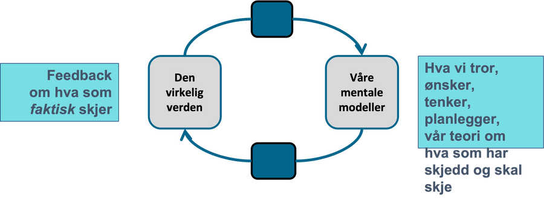
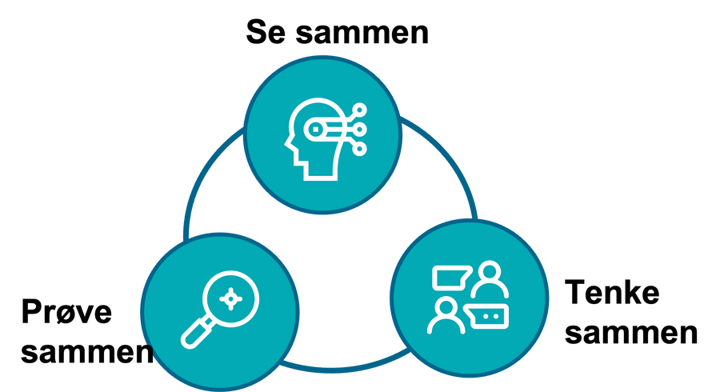
De tre enkle reglene går som en rød tråd gjennom boka..
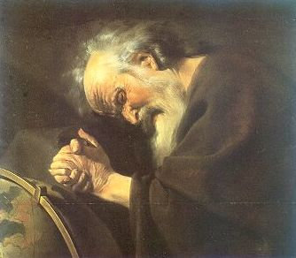

Nobel price winner Daniel Kahnemann.

This is one of the important books for Systems Thinkers. Recommend to read it! Here is a summary from the website Psykologisk.no

Watch Dr. Derek Cabrera recent review research on gjennomgår nyere forskning on DSRP
Chapter 3 What can we learn from Toyota?
Obeya had its origins when Toyota was developing Lexus and later the world's first hybrid, the Prius. The study of Toyota reveals the underlying principles we present in chapter 3. Read the article of Tanaka avdekker de underliggende prinsippene vi presenterer i kapittel 3. Les artikkelen by Tanaka that explains some of the basic methods of Obeya. (see figure below)
Illustration på Obeya basic functions from Tanaka´s article. (over)
The basic elements of the Toyota Production System
Here you will find a collection of scientific articles about Obeya.
Chapter 4. See together - why consensus?
To draw an idea or think and put it together with others ideas or things make us better able to understand wholes, relationships, how things are connected an to see underlying, often hidden information.
By mapping and visualizing systems we understand them better.
Deming drew this diagram that illustrated the connections in a production system. This diagram "lighted up Japan" as Deming wrote in the New Economics. This is fundamental insystem thinking and Obeya.
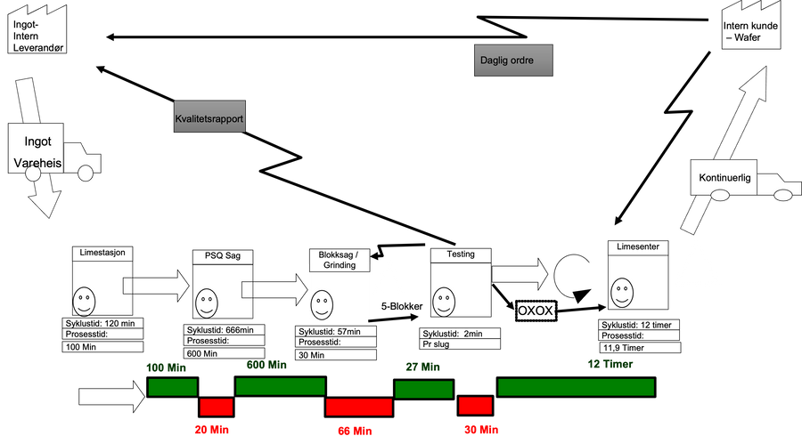
Many have experience the importance of making visible by using value stream maps. The VSM map reveals many areas for improvement and is one of the basic tools in Lean development.See PPTX about VSM
Scientific paper by Dr. Derek Cabrera on the importance of visualization. The article refers to a number of other studies that support the importance of visualizing (PDF document)
Here er some of them:
- Eden, C.(1992) On the Nature of Cognitive Maps. Journal of Management
- Studies,29(3):261-265.
- Santiago,H.C.(2011) Visual Mapping to Enhance Learning and Critical
- Thinking Skills. Optometric Education,36 (3),125-13
- Wileman,R.E.(1993) Visual Communicating. Englewood Cliffs NJ:Educational
- Technology Publ.
- Williams,C.G.(1998) Using Conceptual Maps to Assess Conceptual
- Knowledge of Function. Journal of Research in Matematics Education,
Chapter 5. Think together
The four basic cognitive (thinking) functions that Dr.Derek Cabrera discover we are born with, named asl DSRP– distinction – system – relation og perspective.
Without these functions the brain simple wouldn't work.
Deming describe the beskrev Theory of Knowledge as one of the four lenses "for deeper knowledge" See Deming´s own drawing of a learning cycle. See some notes and illustrations on the attached PDF.
Stafford Beers some rules: POSIWID
Purpose of a system is what I do. Study what the system actually delivers.
Resources on thinking maturity

Chapter 6 Without practice, no knowledge
Practice related to Obeya has three main forms
Observation, dialogue and PDSA learning loops in Obeya
Learning rounds – gemba rounds – LAMDA
Target practise trial/experiments according to the methodology in "Kata"
1. Learning loops

Practice is about doing something to learn. We have an idea, or a theory about a desire effect. And an idea of how we can make it happen. Then we have to try this idea, preferably as a small experiment. The PDSA cycle is a systematization of this dynamic process.
From daily board meetings at Fibo company in Lyngdal (Foto BBW)
2. LAMDA - learning rounds
3. "Kata" Try
Kata is a methodology with many small targeting attempts to remove or reduce an OBSTACLE. Read the article by Mike Rother and Ann Arbour that predicts a study from Toyota practices from 2004-2007

Chapter 7. Strategy Obeya- Hoshin kanri
We have come to the most important chapter "Obeya". Specifically development of new knowledge. We need answers on how to improve and renew our capability systems to carry out missions and achieve our visions or goals

Kapittel 8 Digital Obeya
Part II – Methods and practice
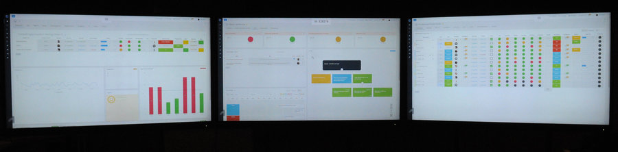
Chapter 9. Planning for Obeya
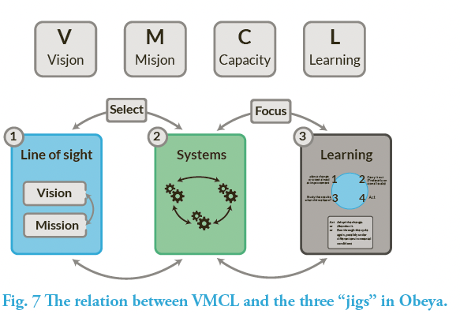
Successful Obeya starts with a good plan. Here you can print out the self assessment sheet. The assessment will give you information on what to do as part of successful preparations.
Chapter 10. Jig 1 - Line of sight
As we underlined in the Learning from Toyota chapter, we need a crystal clear order. What should be the deliverables from the Obeya?

Chapter 11. Understanding systems

The purpose of this wall is to understand the systemic challenges we have. As Cabrera states: "Stop solving problems before understanding the systems"
The key is to use the DSRP rules combined with systems mapping:
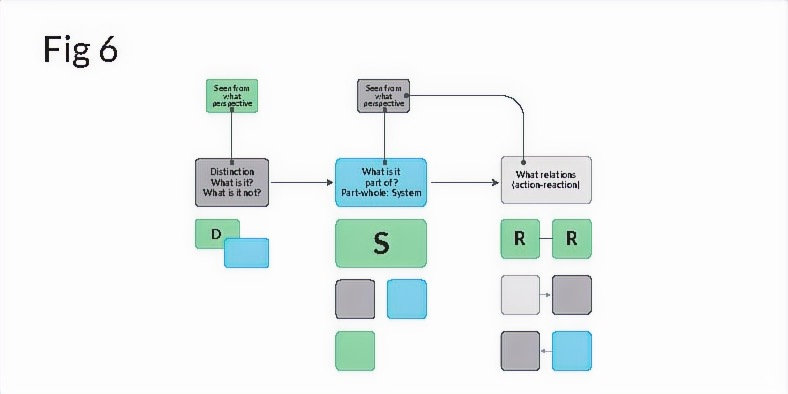

Chapter 12. Jig 3 Learning
The purpose of Obeya is new knowledge. Learning is connected to hor we think. Dr. Deming wrote the learning cycle as in picture to the right. Note that he wrote STUDY, not CHECK.
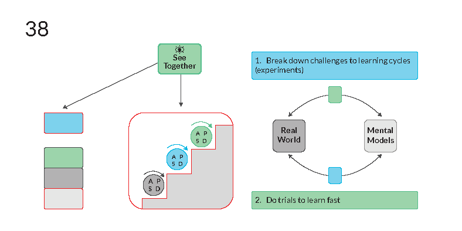
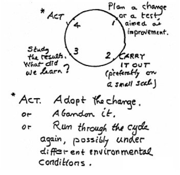
Chapter 13. Learning Culture Mirror

Do we have an adaptive learning culture? This assessment is based on a R&D program the institute did from 2018-2021. Resulting in six key criteria's to understand own learning culture strengths and weaknesses. The assessment tools will be presented here.
Downloads
- Summary of Laloux, Reinventing Organizations (PDF)
- VMCL overview (PDF)
- Tanaka: Obeya room article, PDMA 2009 (PDF)
- Scientific articles about Obeya (Word)
- Value stream mapping and Obeya (PowerPoint)
- Derek Cabrera: why you should map (PDF)
- A3 notes: System of Profound Knowledge (PDF)
- Mike Rother: Toyota Kata study (PDF)
- Obeya self-assessment sheet (Word)
Videos
Let's start the conversation
Want to learn more about our offerings, or have specific challenges to address? Reach out.